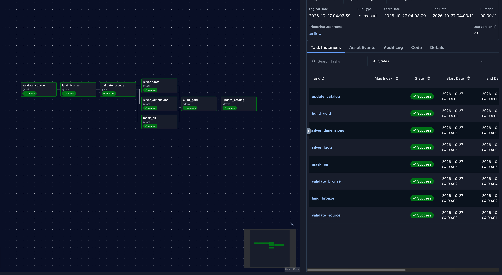

De 166 MB de JSON crudo a una tabla analítica particionada, orquestada con Airflow y consultada con DuckDB.
Usamos los JSON lines que publica el proyecto transfermarkt-datasets como salida de su scraper, bajados con dvc pull. No usamos los CSV ya limpios que publica el proyecto: la limpieza la hace nuestro pipeline.
El recorte cae dentro de los 50–300 MB de la consigna. La temporada 2025 cambió de formato y está incompleta, así que quedó afuera.
player_contacts no viene de Transfermarkt: lo generamos con Faker y una semilla fija para tener datos personales que proteger.
| Entidad | Líneas | Qué es |
|---|---|---|
| appearances | 80.007 | Un jugador en un partido |
| games | 3.238 | Partidos de liga y copa |
| players | 5.393 | Perfil de 4.017 jugadores |
| clubs | 150 | Plantel, estadio, DT |
| competitions | 10 | Ligas, copas y supercopas |
| player_contacts | 4.101 | Email y teléfono sintéticos |
Casi todo el peso está en appearances: cada línea repite el perfil completo del jugador.
El recorte se copió una sola vez a tm_source/ con build_snapshot.py, línea por línea y sin modificar. Junto a los datos queda un manifest.json con el tamaño, la cantidad de líneas y el SHA-256 de cada archivo.
El DAG lee sólo de ahí, nunca de Internet. Si dos integrantes tienen el mismo manifest, tienen los mismos datos y obtienen la misma salida.
games.date), de agosto 2023 a mayo 2025. Particiona Gold.Si Gold usara la fecha de ingesta, los 80 mil registros caerían en una sola carpeta y no habría nada que descartar al filtrar.
Snapshot congelado con manifest de hashes.
JSON linesCopia fiel. No transforma nada.
JSON linesTipado, deduplicado y con la PII enmascarada.
ParquetTablas analíticas, sin joins para el analista.
ParquetValidar antes de transformar. Si la fuente cambió o la copia está dañada, el DAG falla antes de gastar tiempo limpiando. Las tres tareas de Silver no dependen entre sí: corren en paralelo y, si una falla, se reintenta sólo esa.
El mes sale de data_interval_start. En Airflow 3 una corrida manual trae inicio igual a fin. Con esta regla, la corrida manual, la programada y el backfill procesan el mismo mes. Una corrida completa tardó 11 segundos.
Bronze no limpia ni filtra: es una copia exacta de la fuente dentro del lago de datos. Así, si Silver tiene un error, se puede reprocesar sin volver a bajar nada.
Como el snapshot es uno solo y su fecha de ingesta es fija, cada corrida reescribe la misma partición con el mismo contenido.
El backfill ignora el max_active_runs del DAG y lanzaba varias corridas a la vez, que se pisaban al reescribir Bronze. Por eso se corre con --max-active-runs 1.
Falla si falta un archivo o si cambió su tamaño o su SHA-256 respecto del manifest.
Borra la carpeta y copia los 10 archivos sin modificar: 166,7 MB.
El scraper guarda lo que ve en la página: números con unidades, apóstrofes, espacios especiales y saltos de línea.
Las funciones de limpieza están en parsing.py, separadas de Airflow y probadas con 36 casos reales del crudo. Silver usa sólo pandas y pyarrow, y escribe Parquet con un esquema fijo por tabla.
El archivo de 2023 usa mes/día y el de 2024, día/mes. Lo que sí trae cada fecha es el día de la semana adelante, y eso alcanza para resolver casi todas.
Cada partido guarda date_raw y date_resolved_by para auditar cómo se resolvió.
Probar los dos formatos y quedarse con los que coinciden con el día de la semana.
3.056resueltosSi quedan los dos, gana el formato dominante del archivo: 832 a 0 en 2023, 1.011 a 0 en 2024.
182ambiguosEn las copas, un 2:2 definido 12:11 por penales llega como "14:13". Silver agrega decided_by (73 por penales, 28 por alargue) y Gold deja sus goles en NULL para no inflar las estadísticas.
Falta el dato, no hubo cero espectadores. Un 0 bajaría los promedios.
La fila existe porque el jugador jugó. Vacío significa que no convirtió.
Se descarta el contacto, no el jugador: sin email no hay nada que proteger.
| Deduplicación | Clave | Se queda con | Casos |
|---|---|---|---|
| appearances | game_id + player_id | La de más minutos (son copias exactas) | 29 |
| players | player_id | El perfil de la temporada más reciente | 1.379 |
| player_contacts | player_id | El de updated_at más reciente | 79 |
El plan decía descartar los registros que no encuentran su par en otra tabla. Al explorarlos vimos que eran jugadores, partidos y clubes reales. Descartarlos habría borrado goles y minutos que sí ocurrieron.
Por ejemplo, transferidos a mitad de temporada. Se reconstruye el jugador desde el perfil que trae cada aparición.
La competición no está en el catálogo. Se reconstruye desde los partidos con in_catalog = false.
Clubes que jugaron copas contra los de nuestras ligas. Se agregan con id y nombre, también con in_catalog = false.
Por eso Gold une players, clubs y competitions con LEFT JOIN: ninguna aparición queda afuera.
Un hash solo no alcanza: con una lista de emails conocidos se pueden hashear todos y comparar. Sin el salt, ese diccionario nunca coincide con nuestros hashes.
La consigna pide 4. Desnormalizar evita repetir cinco joins en cada consulta, y Parquet comprime bien el nombre del club repetido en cada fila.
El detalle. Suma result, goals_for, player_age y decided_by.
Resultados, goleadas, asistencia de público y tarjetas.
Goles, asistencias y minutos mensuales.
Partidos, puntos, goles a favor y en contra.
Gold se parte en carpetas year=/month= según la fecha del partido. Es la columna por la que filtra cualquier análisis, y deja 21 particiones con datos.
| Alternativa | Por qué no |
|---|---|
| competition_id | Pocos valores, con ligas de tamaño muy distinto |
| club_id | Cientos de archivos chicos |
| season | Demasiado grueso: casi no descarta nada |
Ninguna capa agrega filas: todas reemplazan su salida.
shutil.rmtree del mes antes de escribir.Prueba: marzo de 2024, con Clear sobre la corrida y idempotency_check.py antes y después. Las 8 tareas se ejecutan de nuevo.
| Tabla | Filas | SHA-256 antes | Después |
|---|---|---|---|
| silver games | 112 | 32557fb29e064ec0… | idéntico |
| silver appearances | 3.445 | 2ece25d41cd9e792… | idéntico |
| player_appearances | 3.445 | d25f5a1e62213fe8… | idéntico |
| match_results | 112 | 65f9ed37abdbd0b0… | idéntico |
| player_month_stats | 1.216 | bdce9abf316a4cae… | idéntico |
| club_month_stats | 68 | bc3c9792b76598a2… | idéntico |
Y un único archivo por partición en los cuatro datasets de Gold.
DuckDB lee los nombres de las carpetas como columnas (hive_partitioning = true). Si el filtro usa esas columnas, descarta las otras 20 carpetas sin abrirlas. Con 80 mil filas la diferencia es de milisegundos; con más datos, el ahorro crece con cada mes que se descarta.
Consulta: los cinco goleadores de la Serie A 2023/24. Sin el pipeline hay que leer el JSON del scraper y limpiarlo en cada consulta. Con el pipeline se lee el Parquet que build_gold escribe en Gold, ya tipado y comprimido.
Sobre el JSON, DuckDB tarda lo mismo que pandas: el tiempo se va en parsear el texto. La mejora viene del formato: Parquet es columnar y DuckDB lee sólo las columnas que usa la consulta.
benchmark_formatos.py
En este caso el crudo da el mismo top 5, pero en general no está limpio: tiene apariciones duplicadas, fechas ambiguas y, en las copas, los penales sumados al resultado. En Gold eso ya está resuelto.
El catálogo suma tres vistas de consulta: top_scorers, league_table y highest_scoring_matches. Para validar el modelo comparamos tres de sus resultados con las tablas oficiales.
Las tres cifras coinciden con las tablas oficiales. Un error en los joins, en la deduplicación o en los penales las habría movido.

Captura de una corrida real: 8 tareas en verde, 11 segundos.La primera versión leía las 80 mil apariciones completas, dos veces. Se pasó a leer línea por línea y guardar sólo los campos necesarios: de más de 1 GB a ~140 MB.
Una corrida manual trae inicio igual a fin. Se tomó el mes de data_interval_start como regla única.
Al ejecutar una tarea, Airflow 3 no agrega dags/ a las rutas de Python. El DAG agrega su carpeta a sys.path, y .airflowignore evita que los módulos se lean como DAGs.
El backfill ignora max_active_runs del DAG. Se corre con --max-active-runs 1: 32 corridas y 79.978 filas en Gold, las mismas que en Silver.
Las rutas están centralizadas en config.py y se cambian con variables de entorno, y las particiones year=/month= las reconoce Glue igual que DuckDB.
Lo que cambia es dónde viven los archivos y de dónde sale el secreto. La lógica de pandas, el SQL y el DAG quedan iguales.
tm_source/, bronze/, silver/, gold/PII_SALT